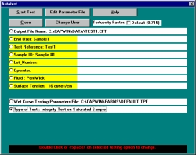

Select the Group menu option.
Select the Group menu option.Choose Select Group to use an existing group.
Choose New Group to create a new group.
For more information on the use of groups see Example: Using Groups.
 From the CAP WIN Main Screen, select the Auto Test
option from the Execute
menu.
From the CAP WIN Main Screen, select the Auto Test
option from the Execute
menu.
An Auto Test screen specific to the type of test appears.
Select Type of Test. If the test shown is incorrect, click on Type of Test. If the test shown is incorrect, click on Type of Test.
Select Type of Test. If the test shown is incorrect, click on Type of Test. If the test shown is incorrect, click on Type of Test.
The Test Selection screen appears. Select Integrity Test from the yellow list. Click OK. You are returned to the Auto Test screen.
Select the Output File Name. If the file shown is incorrect or to create a new file, click on the Output File Name entry box.
The Output Data File selector appears
 The file selector appears as shown if CAP WIN was installed with the default path. If you opted for a different path, locate the Capwin folder and select it.
The file selector appears as shown if CAP WIN was installed with the default path. If you opted for a different path, locate the Capwin folder and select it.
To select an existing file, click on the folder containing the file. Click on the file in the file list.
To create a new file, select or create a folder. Type a name for the file in the text box.
To select an existing file, click on the folder containing the file. Click on the file in the file list.
To create a new file, select or create a folder. Type a name for the file in the text box.

End User, Test Reference, Sample ID, Lot_Number, Operator
and Fluid are all optional and may be left blank. These items are printed on the reports for information and identification purposes. (It is recommended that Fluid not be left blank.)
Surface Tension is used by the CAP WIN program to perform calculations. Be sure the surface tension displayed is correct for the fluid you are using. Enter the correct value in dynes/cm if it is not. This value is not automatically updated if you change Fluid. See Pore Size Range Table, for more information.
Wet Curve Testing Parameters File displays the name of the parameter file being used for the test.
If you wish to select another file or create a new file, click on the Wet Curve Testing Parameters File.
If you wish to select another file or create a new file, click on the Wet Curve Testing Parameters File.
The WET Parameter File selection screen appears.
The file selector appears as shown if CAP WIN was installed with the default path. If you opted for a different path, locate the Capwin folder and select it.
To select an existing file, click on the folder containing the file. Click on the file in the file list. Click OK.
To create a new file, click on a file in the file list. Click OK.
The file selector appears as shown if CAP WIN was installed with the default path. If you opted for a different path, locate the Capwin folder and select it.
To select an existing file, click on the folder containing the file. Click on the file in the file list. Click OK.
To create a new file, click on a file in the file list. Click OK.
You are returned to the Auto Test screen.
Click the Edit Parameter File button at the top of the Auto Test screen.
Click the Edit Parameter File button at the top of the Auto Test screen.
 The Auto testing Parameters screen appears.
The Auto testing Parameters screen appears.For a complete description of the options available on this screen and for further discussion about customizing parameter files refer to Edit Auto Parameters.
After making changes, click the Save As ... button.
You are returned to the File selector shown in Step 10. Type the new file name in the text box in the file selector screen.
Click OK. You are returned to the Auto testing Parameters screen. Click Exit. You are returned to the Auto Test screen.
Click the Start Test button at the top of the Auto Test screen.
 If the data file you have chosen already exists, you will see a screen similar to the one shown at right. Clicking Yes continues the test and overwrites the existing data in the file with the new test data. Clicking No returns to the Auto Test screen. Follow the instructions described above for selecting a different Output File.
If the data file you have chosen already exists, you will see a screen similar to the one shown at right. Clicking Yes continues the test and overwrites the existing data in the file with the new test data. Clicking No returns to the Auto Test screen. Follow the instructions described above for selecting a different Output File.
A message box prompts you to insert the saturated sample. Insert the sample as described below and click OK to begin the test. For complete information on installing samples, see Installing the Sample .
 Saturate the sample and place it in the bottom of the sample chamber. Make sure it completely covers the O ring. If it does not, place one of the small-sample adapter plates in the bottom of the chamber, place the sample on the smaller O ring of the adapter, and place the matching adapter plate on top of the sample. The liquid should completely wet the sample (the contact angle must be zero). If it does not (the contact angle is greater than zero), the result will be larger than the actual maximum pore size.
Saturate the sample and place it in the bottom of the sample chamber. Make sure it completely covers the O ring. If it does not, place one of the small-sample adapter plates in the bottom of the chamber, place the sample on the smaller O ring of the adapter, and place the matching adapter plate on top of the sample. The liquid should completely wet the sample (the contact angle must be zero). If it does not (the contact angle is greater than zero), the result will be larger than the actual maximum pore size.
Place the thick spacing insert in the chamber. It should press far enough into the chamber so that the O ring on its side will pass below the upper rim of the chamber, but not so far that the entire insert is below the upper rim.
Screw the chamber cap onto the chamber and hand-tighten to the point where the O ring on the top of the spacing insert is compressed against the chamber cap.
Place the thick spacing insert in the chamber. It should press far enough into the chamber so that the O ring on its side will pass below the upper rim of the chamber, but not so far that the entire insert is below the upper rim.
Screw the chamber cap onto the chamber and hand-tighten to the point where the O ring on the top of the spacing insert is compressed against the chamber cap.
Caution: Over-tightening the cap can cause the cap and spacing insert to seize. If this happens, the sample chamber must be replaced. Over-tightening may also damage the sample
Add a small amount of fluid (1 or 2 ml) to the top of the sample.
After installing the sample and clicking OK
, a Current Test Status screen specific to the type of test appears. A box appears in the center of the screen prompting you to click OK to start the test.
 Upon completion of the test, the pressure is released and a message box informs you that the sample may be removed.
Upon completion of the test, the pressure is released and a message box informs you that the sample may be removed. Click OK to return to the CAP WIN Main Screen.